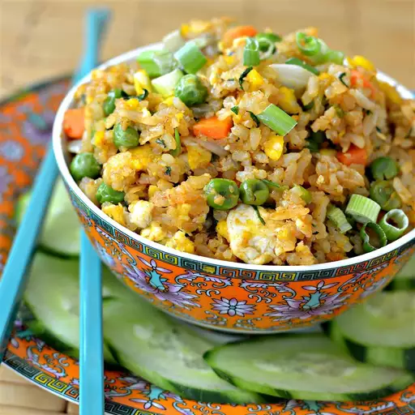

Special Fried Rice

This special fried rice is a variation of the typical restaurant-style fried rice and is sure to be a hit!
Any cooked meat can be added, but it tastes great with shrimp, bacon, Spam, ham, Chinese sausage, or pork
Ingredients
- 2 teaspoons canola oil, or more as needed
- 2 eggs
- ½ teaspoon water
- 2 teaspoons sesame oil, divided
- ½ onion, diced
- 1 clove garlic, minced
- ¼ cup frozen peas and carrots, thawed and patted dry with paper towel
- 2 cups cold cooked jasmine rice
- 1 tablespoon Sriracha sauce, or to taste (Optional)
- 2 teaspoons light soy sauce
- 1 teaspoon fish sauce
- ½ teaspoon white sugar
- ½ teaspoon salt, or to taste
- ½ teaspoon ground white pepper, or to taste
- ½ teaspoon monosodium glutamate (MSG) (Optional)
- ¼ cup chopped green onion, or to taste, divided
- ¼ cup chopped fresh cilantro, or to taste (Optional)
- 1 cucumber (Optional)